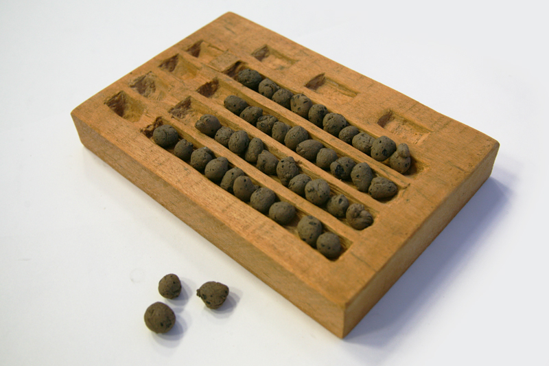
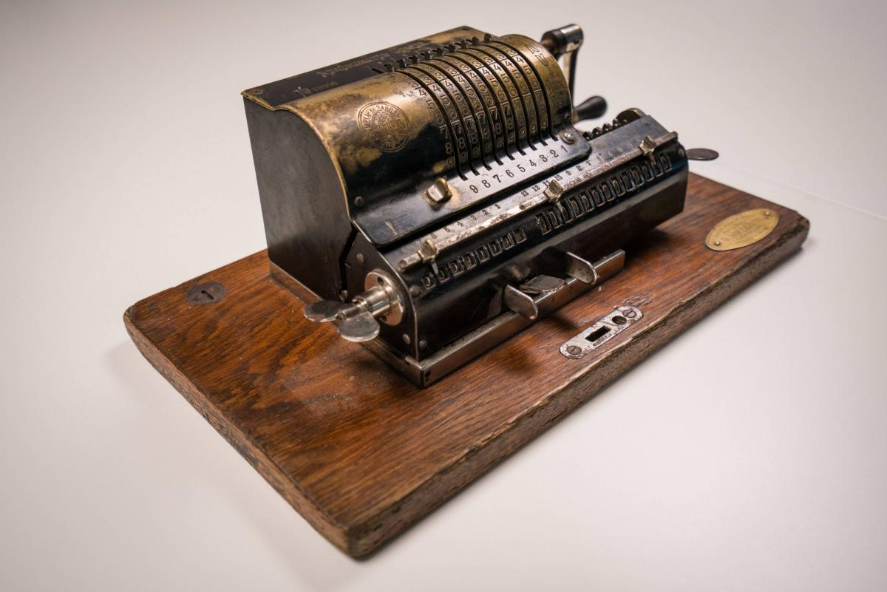

Путь, который человечество прошло за 5000 лет, сегодня умещается в кремниевом кристалле вашего смартфона.

История автоматизации расчетов началась задолго до появления электричества. Первым калькулятором человечества были обычные пальцы, но по мере усложнения торговли и астрономических наблюдений появились специализированные инструменты. Самым известным из них стал абак.
Это устройство позволяло опытным операторам проводить операции с огромными числами, используя простые костяшки на прутьях. Несмотря на примитивность, абак оставался основным инструментом бухгалтеров вплоть до эпохи Возрождения.
В XVII веке произошел качественный скачок. Блез Паскаль в возрасте 19 лет изобрел "Паскалину" — первую в мире механическую суммирующую машину. Внутри нее скрывалась сложная система шестеренок, каждая из которых отвечала за определенный десятичный разряд.
Механические калькуляторы продолжали совершенствоваться. В 1820 году Шарль Ксавье Тома де Кольмар представил арифмометр — первый серийный калькулятор, который стал коммерчески успешным. Он мог выполнять не только сложение, но и полноценное умножение и деление.

Эти громоздкие стальные и латунные машины стали стандартом в мировых банках, страховых компаниях и научных лабораториях на целое столетие. Они требовали физической силы (нужно было крутить ручку), но обеспечивали недоступную ранее точность.
Переход от механики к электронике начался в середине XX века. Первые ламповые калькуляторы были размером с целую комнату. Они выделяли чудовищное количество тепла и часто выходили из строя из-за перегорания вакуумных ламп.
Ситуация радикально изменилась с изобретением транзистора в 1947 году. Это позволило уменьшить вычислительные узлы в тысячи раз. В 1960-х появились первые настольные электронные калькуляторы, а уже в начале 1970-х — по-настоящему карманные модели.
Именно этот период представлен в нашем Экспонате №1. Компактные устройства с красными светодиодными или зелеными вакуумно-люминесцентными индикаторами стали символом прогресса. Сложная математика наконец стала доступна каждому человеку.
"Математика — это язык, на котором написана книга природы,
а калькулятор — наш верный переводчик."
CalcMuseum © 2026.